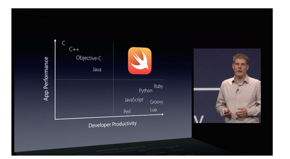

@steveklabnik
Rust is a new programming language from Mozilla (and friends).
Rust is a low-level programming language that often feels like a high level one.
Rust makes low-level programming accessible to those who haven't done it, and safer for those who have.

Let's talk about safety.
Low level programming has historically been very, very, very unsafe.
Here's some Ruby:
v = [];
v.push("Hello");
x = v[0];
v.push("world");
puts x
Here's some C++:
#include<iostream>
#include<vector>
#include<string>
int main() {
std::vector<std::string> v;
v.push_back("Hello");
std::string& x = v[0];
v.push_back("world");
std::cout << x;
}
$ g++ hello.cpp -Wall -Werror
$ ./a.out
Segmentation fault (core dumped)
int main() {
std::vector<std::string> v;
| location | name | value |
|---|---|---|
| 0x30 | v |
v.push_back("Hello");
| location | name | value |
|---|---|---|
| 0x30 | v | 0x18 |
| 0x18 | "Hello" |
std::string& x = v[0];
| location | name | value |
|---|---|---|
| 0x30 | v | 0x18 |
| 0x18 | "Hello" | |
| 0x14 | x | 0x18 |
v.push_back("world");
| location | name | value |
|---|---|---|
| 0x30 | v | 0x08 |
| 0x18 | GARBAGE | |
| 0x14 | x | 0x18 |
| 0x08 | "Hello" | |
| 0x04 | "world" |
If the new
size()is greater thancapacity()then all iterators and references (including the past-the-end iterator) are invalidated.
fn main() { let mut v = vec![]; v.push("Hello"); let x = &v[0]; v.push("world"); println!("{}", x); }
error: cannot borrow `v` as mutable because it is also borrowed as immutable
v.push("world");
^
note: previous borrow of `v` occurs here; the immutable borrow prevents subsequent moves or mutable borrows of `v` until the borrow ends
let x = &v[0];
^
fn main() { let mut v = vec![]; v.push("Hello"); let x = v[0].clone(); v.push("world"); println!("{}", x); }
fn main() { let mut numbers = vec![1i, 2i, 3i]; for i in range(0u, 3u) { spawn(proc() { for j in range(0, 3) { numbers[j] += 1 } }); } }
6:71 error: capture of moved value: `numbers`
for j in range(0, 3) { numbers[j] += 1 }
^~~~~~~
7:50 note: `numbers` moved into closure environment here because it has type `proc():Send`, which is non-copyable (perhaps you meant to use clone()?)
spawn(proc() {
use std::sync::{Arc,Mutex}; fn main() { let numbers = Arc::new(Mutex::new(vec![1i, 2i, 3i])); for i in range(0u, 3u) { let number = numbers.clone(); spawn(proc() { let mut array = number.lock(); (*array)[i] += 1; println!("numbers[{}] is {}", i, (*array)[i]); }); } }
fn main() { let numbers = Arc::new(Mutex::new(vec![1i, 2i, 3i])); for i in range(0u, 3u) { let number = numbers.clone(); spawn(proc() { // ... }); } }
spawn(proc() { let mut array = number.lock(); (*array)[i] += 1; println!("numbers[{}] is {}", i, (*array)[i]); });
Systems programming has kept the same tools for decades.
Rust uses tooling that is inspired by Ruby and JavaScript.
$ cargo new hello_world --bin
$ cd hello_world
$ tree .
.
├── Cargo.toml
└── src
└── main.rs
1 directory, 2 files
[package]
name = "hello_world"
version = "0.0.1"
authors = ["Your Name <you@example.com>"]
fn main() { println!("Hello, world!") }
$ cargo run
Compiling hello_world v0.0.1 (file:///Users/you/src/hello_world)
Running `target/hello_world`
Hello, world!
[package]
name = "hello_world"
version = "0.0.1"
authors = ["Your Name <someone@example.com>"]
[dependencies.semver]
git = "https://github.com/rust-lang/semver.git"
$ cargo run
Updating git repository `https://github.com/rust-lang/semver.git`
Compiling semver v0.0.1 (https://github.com/rust-lang/semver.git#bf739419)
Compiling hello_world v0.0.1 (file:///home/you/projects/hello_world)
Running `target/hello_world`
Hello, world!

Rust makes low-level programming accessible to those who haven't done it, and safer for those who have.
@steveklabnik